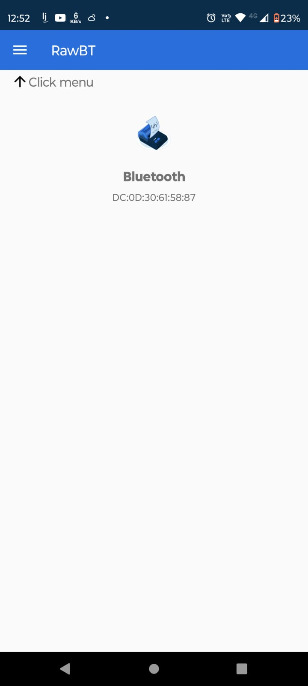
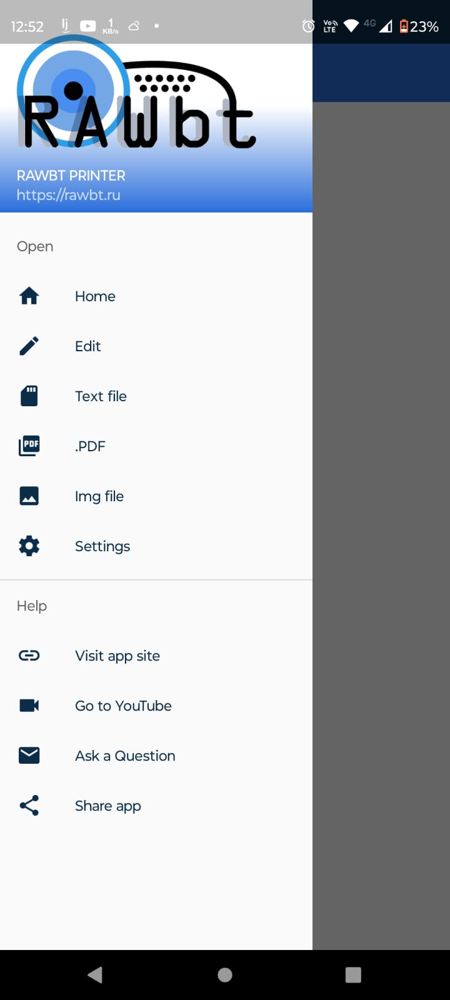
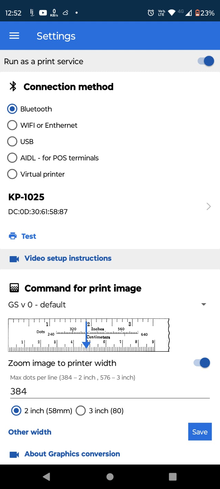
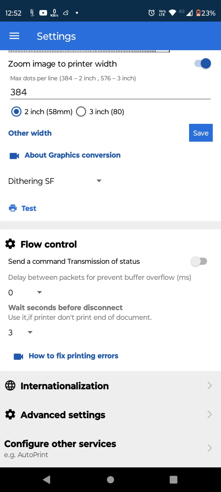
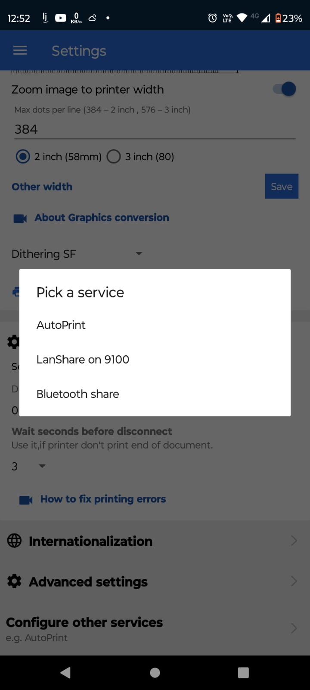
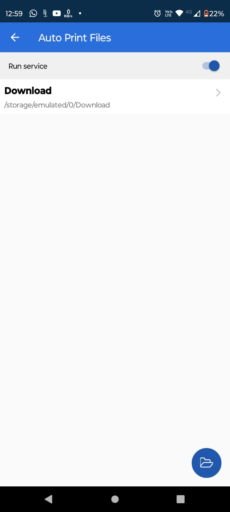
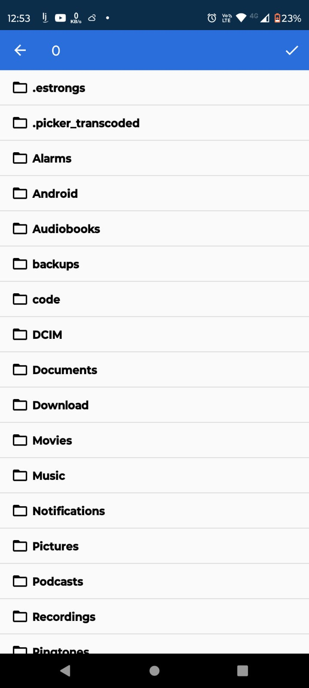
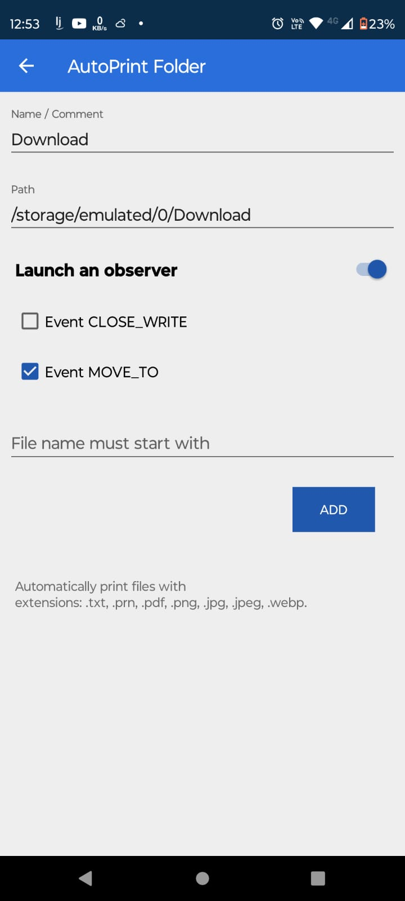

Primeiros passos com sua Impressora Bluetooth
Vale ressaltar que a versão
RawBT 5.0.4 não está disponibilizada para download pela PlayStore, por este motivo, será necessário realizar a instalação de forma manual em seu dispositivo Android.
📱 Passo 1 - Instalar o aplicativo RawBT
Baixe o aplicativo RawBT Pro diretamente aqui:
📥 Baixar RawBT Pro 5.0.4 (APK)

Após o Download, instale o APK manualmente:(Por se tratar de uma instalação manual, o Android pode alertar virus ou ameaça)
🔧 Passo 2 - Conectar sua impressora térmica
- Abra o RawBT no Android e va em Click Menu

- Clique em Settings(Configurações)

- Mantenha o Conection Method em Bluetooth e clique no campo que aparecerá em vermelho para selecionar a impressora."Garanta que a impressora esteja ligada e próximo do seu celular."

- Role a página até ver Configure other services

- Clique em AutoPrint

- Clique no canto inferior a direita da tela

- Selecione a pasta de download e em seguida clique no icone ao canto superior direito

- Marque os campos Launch an observer e Event MOVE_TO e depois salve

🎥 Vídeo complementar
Confira também esse tutorial em vídeo: